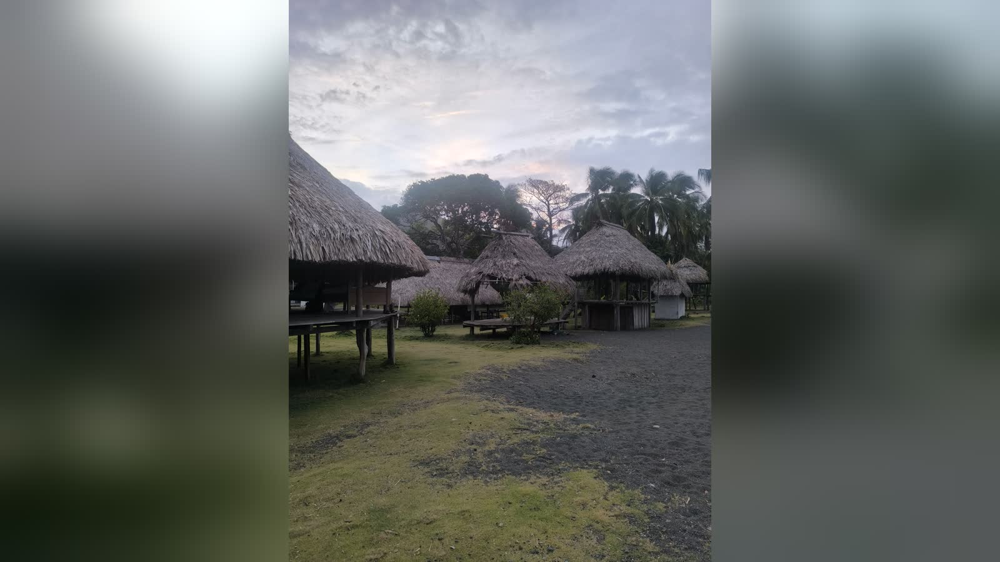

Panama · 17. 5. 2025
Panama – země živých tradic

Panama není jen průplav spojující dva oceány. Je to také země, která propojuje světy – moderní a dávný, městský a přírodní, koloniální a domorodý. Tradice tu nejsou zavřené v muzeích. Jsou součástí každodenního života. Žijí v tanci, jídle, písních, výšivkách i ve slovech, která se šeptají kolem ohňů. Ať už stojíš na horské stezce u kakaovníků, na molu ostrova Guna Yala nebo v rytmu cumbie v ulicích města Las Tablas, dýchá na tebe jedna věc – Panama je země živých tradic.
V minulém článku jsme si povídali o kmenech v Panamě. Dnes na něj částečně navážeme a uděláme rychlou sondu do zvyků některých z těchto kmenů.
Emberá – život v rytmu řeky
V oblasti Darién, uprostřed panamské džungle, žije kmen Emberá – komunita, která si dodnes uchovává silné pouto k přírodě i ke svému způsobu života. Jejich vesnice leží podél řek, které tu nejsou jen vodním tokem. Řeka určuje směr, rytmus i každodenní bytí. Lidé Emberá se po ní pohybují v kánoích, které si sami staví z místních stromů, nejčastěji z cedru.
Jejich těla zdobí tradiční tetování z přírodního barviva jagua. Každý motiv má svůj význam – a i když se některé zvyky proměnily, řada těchto symbolů stále nese ochranný nebo rituální smysl.
Setkání s Emberá není turistická atrakce. Je to chvíle, kdy člověk zpomalí, naslouchá a vnímá.
Guna – mola jako tichý příběh
Na druhém konci země, v Karibiku, leží souostroví Guna Yala – mořská domovina kmene Guna. Jejich tradice jsou barevné, klidné a zároveň hluboké. Nejvýraznějším projevem jejich kultury je mola – ručně vyšívaný látkový panel, který nosí ženy na svých oděvech. Každá mola vypráví příběh – o přírodě, o duchovnu i člověku. Jazyk mol je tichý, krásný, předává se z generace na generaci.
Ngäbe a Buglé – slavnosti, kakaovníky a vodopády
Ve vyšších polohách západní Panamy žijí kmeny Ngäbe a Buglé. Jejich každodenní život je napojený na rytmus hor, počasí a země. Jedním jejich z důležitých kulturních momentů je slavnost Krüngitde – setkání, kde se sdílí jídlo, hraje na bubny, tančí a vyměňují se dary.
A potom je tu jejich kakao – pěstované s úctou, organicky, a považované za dar země. Každá bobule má svůj duchovní rozměr.
Vesnice Wounaan
Wounaan žijí rozptýleně v oblasti Emberá-Wounaan Comarca. Jsou mistři v pletení košíků a ochránci deštného pralesa. Jejich jazyk i zvyky patří do skupiny Chocó, přesto si uchovávají vlastní identitu.
Karneval v Las Tablas
Ale Panama není jen domorodá. Je pestrá, živá a neustále oslavující. Karneval v Las Tablas patří k největším v Latinské Americe. Čtyři dny a čtyři noci tančí celé město. Barevné kostýmy, tradiční ženský kroj zvaný pollera, hudba, zpěv a neuvěřitelná energie. Každá čtvrť má svou královnu, své barvy a vlastní tradici.
To všechno – domorodé rituály, karnevaly, výšivky, tanec, víra, jídlo i ticho – tvoří Panamu, která má hluboké kořeny a otevřené srdce. Přidej se ke mně. Objev Panamu s respektem a úžasem.
Chcete poznat Panamu naplno?
Průplav, Casco Viejo, San Blas – sestavíme itinerář přesně pro vás.
Napsat MartinoviDalší články o Panamě: